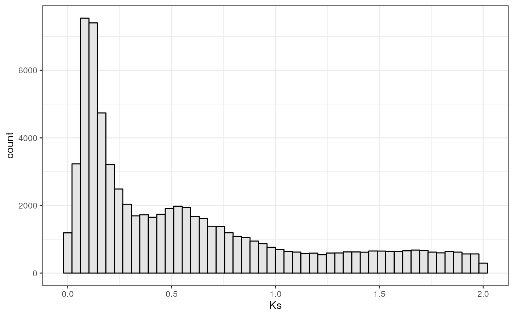
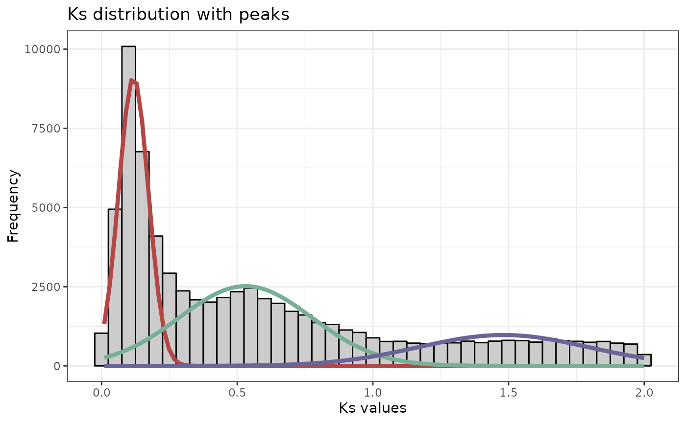
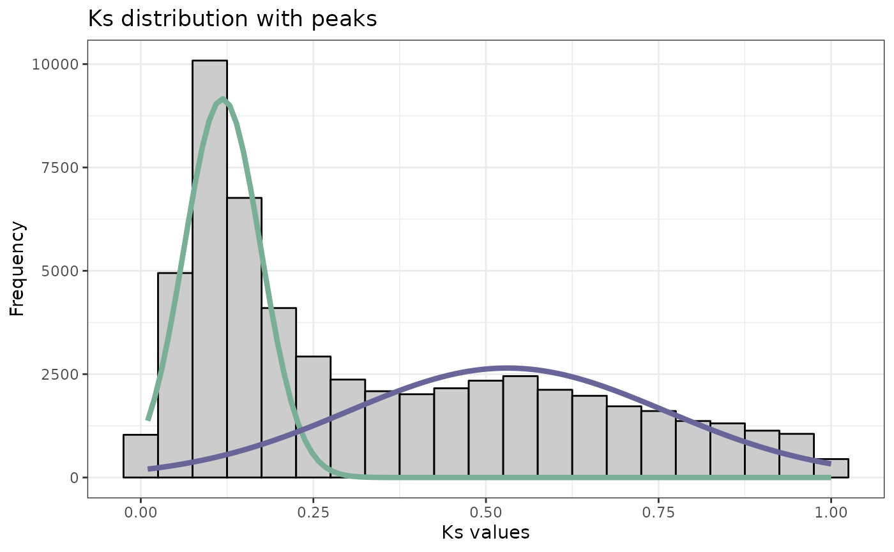
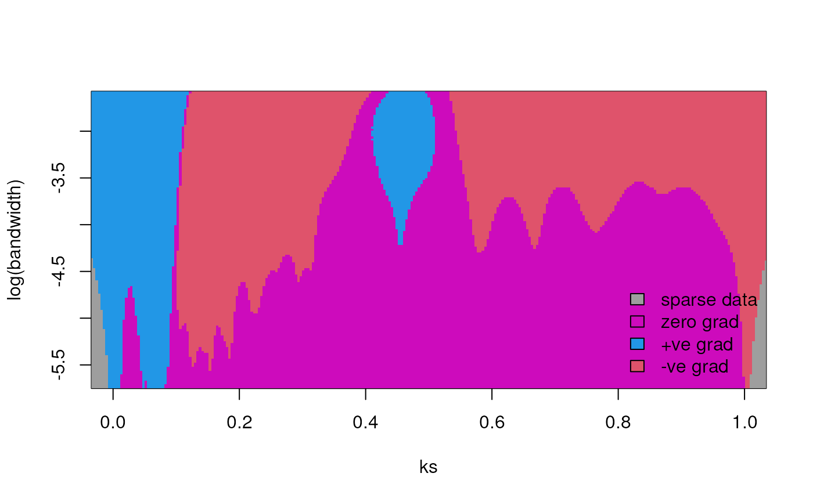
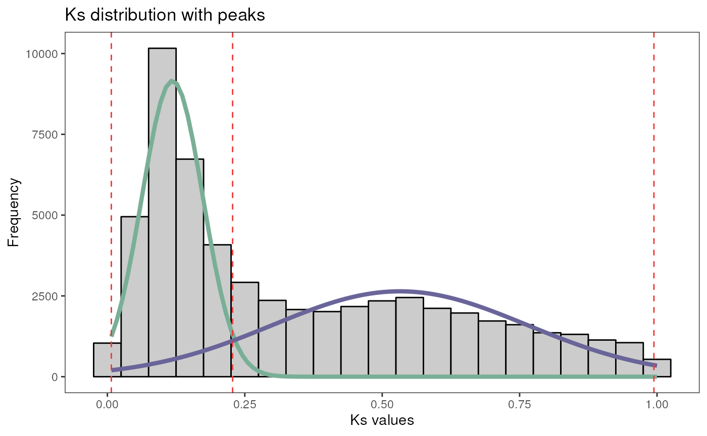

Identification and classification of duplicated genes
Fabricio Almeida-Silva
VIB-UGent Center for Plant Systems Biology, Ghent University, Ghent, Belgium
Yves Van de Peer
VIB-UGent Center for Plant Systems Biology, Ghent University, Ghent, Belgium
Source:
vignettes/doubletrouble_vignette.Rmd
doubletrouble_vignette.RmdIntroduction
Gene and genome duplications are a source of raw genetic material for evolution (Ohno 2013). However, whole-genome duplications (WGD) and small-scale duplications (SSD) contribute to genome evolution in different manners. To help you explore the different contributions of WGD and SSD to evolution, we developed doubletrouble, a package that can be used to identify and classify duplicated genes from whole-genome protein sequences, calculate substitution rates per substitution site (i.e., Ka and Ks) for gene pairs, find peaks in Ks distributions, and classify gene pairs by age groups.
Installation
You can install doubletrouble from Bioconductor with the following code:
if(!requireNamespace("BiocManager", quietly = TRUE)) {
install.packages("BiocManager")
}
BiocManager::install("doubletrouble")
## Check that you have a valid Bioconductor installation
BiocManager::valid()Then, you can load the package:
Data description
In this vignette, we will use protein sequences (primary transcripts only) and genome annotation for the yeast species Saccharomyces cerevisiae and Candida glabrata. Data were obtained from Ensembl Fungi release 54 (Yates et al. 2022).
The example data sets are stored in the following objects:
-
yeast_seq: A list of
AAStringSetobjects with elements named Scerevisiae and Cglabrata.
# Load list of DIAMOND tabular output
data(yeast_seq)
head(yeast_seq)
#> $Scerevisiae
#> AAStringSet object of length 6600:
#> width seq names
#> [1] 4910 MSQDRILLDLDVVNQRLILFNS...SELPEMLSLILRQYFTDLASS YLR106C
#> [2] 4092 MCKNEARLANELIEFVAATVTG...NYERLQAKEVASSTEQLLQEM YKR054C
#> [3] 3744 MSLTEQIEQFASRFRDDDATLQ...IGSAVSPRNLARTDVNFMPWF YHR099W
#> [4] 3268 MVLFTRCEKARKEKLAAGYKPL...ETLRGSLLLAINEGHEGFGLA YDR457W
#> [5] 3144 MLESLAANLLNRLLGSYVENFD...SLYRNIAIAVREYNKYCEAIL YLL040C
#> ... ... ...
#> [6596] 25 MFSLSNSQYTCQDYISDHIWKTSSH YOR302W
#> [6597] 25 MRAKWRKKRTRRLKRKRRKVRARSK YDL133C-A
#> [6598] 24 MHSNNSRQILIPHQNENMFLTELY YDL247W-A
#> [6599] 24 MLVLYRKRFSGFRFYFLSIFKYII YBR191W-A
#> [6600] 16 MLSLIFYLRFPSYIRG YJR151W-A
#>
#> $Cglabrata
#> AAStringSet object of length 5293:
#> width seq names
#> [1] 4880 MSIQSADTVVFDLDKAFQRRDE...VELPEMLALILRQYFSDLASQ CAGL0M11616g
#> [2] 4336 MYCIIRLCLLLLYMVRFAAAIV...ITFLGIKKCIILLIIVVVSIA CAGL0I10147g
#> [3] 4041 MVQRNIELARYITTLLIGVCPK...NDIESKVLDDTKQLLNSIEYV CAGL0K08294g
#> [4] 3743 MASADQISEYAEKLKDDQQSLA...ISASVNPRNLAKTDISFMPWF CAGL0A01914g
#> [5] 3247 MVKLTRFEKLQKEKNAEYFKPF...DTLRGSLLIAINEGHEGFGLA CAGL0K06303g
#> ... ... ...
#> [5289] 43 MLGAPISRDTPRKTRSKTQFFQGPIVSLITEKCTYEWGNPSIN CAGL0M02541g
#> [5290] 39 MLPGGPIVVLILVGLAACIIVATIIYRKWQERQRALARF CAGL0M03305g
#> [5291] 39 MLPGGVILVFILVGLAACAIVAVIIYRKWQERQRSLQRF CAGL0L08008g
#> [5292] 37 MINEGQLQTLVIGFGLAMVVLVVVYHAVASTMAVKRD CAGL0C05461g
#> [5293] 34 MQPTIEATQKDNTQEKRDNYIVKGFFWSPDCVIA CAGL0C01919g-
yeast_annot: A
GRangesListobject with elements named Scerevisiae and Cglabrata.
# Load annotation list processed with syntenet::process_input()
data(yeast_annot)
head(yeast_annot)
#> GRangesList object of length 2:
#> $Scerevisiae
#> GRanges object with 6600 ranges and 2 metadata columns:
#> seqnames ranges strand | type gene_id
#> <Rle> <IRanges> <Rle> | <factor> <character>
#> [1] I 335-649 + | gene YAL069W
#> [2] I 538-792 + | gene YAL068W-A
#> [3] I 1807-2169 - | gene YAL068C
#> [4] I 2480-2707 + | gene YAL067W-A
#> [5] I 7235-9016 - | gene YAL067C
#> ... ... ... ... . ... ...
#> [6596] XVI 939922-941136 + | gene YPR201W
#> [6597] XVI 943032-943896 + | gene YPR202W
#> [6598] XVI 943880-944188 + | gene YPR203W
#> [6599] XVI 944603-947701 + | gene YPR204W
#> [6600] XVI 946856-947338 - | gene YPR204C-A
#> -------
#> seqinfo: 31 sequences from an unspecified genome; no seqlengths
#>
#> $Cglabrata
#> GRanges object with 5293 ranges and 2 metadata columns:
#> seqnames ranges strand | type gene_id
#> <Rle> <IRanges> <Rle> | <factor> <character>
#> [1] ChrA_C_glabrata_CBS138 1608-2636 - | gene CAGL0A00105g
#> [2] ChrA_C_glabrata_CBS138 2671-4809 - | gene CAGL0A00116g
#> [3] ChrA_C_glabrata_CBS138 11697-13042 + | gene CAGL0A00132g
#> [4] ChrA_C_glabrata_CBS138 14977-15886 + | gene CAGL0A00154g
#> [5] ChrA_C_glabrata_CBS138 17913-19017 - | gene CAGL0A00165g
#> ... ... ... ... . ... ...
#> [5289] mito_C_glabrata_CBS138 13275-13421 + | gene CaglfMp08
#> [5290] mito_C_glabrata_CBS138 13614-14396 + | gene CaglfMp09
#> [5291] mito_C_glabrata_CBS138 14631-14861 + | gene CaglfMp10
#> [5292] mito_C_glabrata_CBS138 15384-16067 + | gene CaglfMp11
#> [5293] mito_C_glabrata_CBS138 16756-17565 + | gene CaglfMp12
#> -------
#> seqinfo: 31 sequences from an unspecified genome; no seqlengthsIMPORTANT: If you have protein sequences as FASTA
files in a directory, you can read them into a list of
AAStringSet objects with the function
fasta2AAStringSetlist() from the Bioconductor package
syntenet.
Likewise, you can get a GRangesList object from GFF/GTF
files with the function gff2GRangesList(), also from syntenet.
Our goal here is to identify and classify duplicated genes in the S. cerevisiae genome. The C. glabrata genome will be used as an outgroup to identify transposed duplicates later in this vignette.
Data preparation
First of all, we need to process the list of protein sequences and
gene ranges to detect synteny with syntenet.
We will do that using the function process_input() from the
syntenet
package.
library(syntenet)
# Process input data
pdata <- process_input(yeast_seq, yeast_annot)
# Inspect the output
names(pdata)
#> [1] "seq" "annotation"
pdata$seq
#> $Scerevisiae
#> AAStringSet object of length 6600:
#> width seq names
#> [1] 4910 MSQDRILLDLDVVNQRLILFNS...SELPEMLSLILRQYFTDLASS Sce_YLR106C
#> [2] 4092 MCKNEARLANELIEFVAATVTG...NYERLQAKEVASSTEQLLQEM Sce_YKR054C
#> [3] 3744 MSLTEQIEQFASRFRDDDATLQ...IGSAVSPRNLARTDVNFMPWF Sce_YHR099W
#> [4] 3268 MVLFTRCEKARKEKLAAGYKPL...ETLRGSLLLAINEGHEGFGLA Sce_YDR457W
#> [5] 3144 MLESLAANLLNRLLGSYVENFD...SLYRNIAIAVREYNKYCEAIL Sce_YLL040C
#> ... ... ...
#> [6596] 25 MFSLSNSQYTCQDYISDHIWKTSSH Sce_YOR302W
#> [6597] 25 MRAKWRKKRTRRLKRKRRKVRARSK Sce_YDL133C-A
#> [6598] 24 MHSNNSRQILIPHQNENMFLTELY Sce_YDL247W-A
#> [6599] 24 MLVLYRKRFSGFRFYFLSIFKYII Sce_YBR191W-A
#> [6600] 16 MLSLIFYLRFPSYIRG Sce_YJR151W-A
#>
#> $Cglabrata
#> AAStringSet object of length 5293:
#> width seq names
#> [1] 4880 MSIQSADTVVFDLDKAFQRRDE...VELPEMLALILRQYFSDLASQ Cgl_CAGL0M11616g
#> [2] 4336 MYCIIRLCLLLLYMVRFAAAIV...ITFLGIKKCIILLIIVVVSIA Cgl_CAGL0I10147g
#> [3] 4041 MVQRNIELARYITTLLIGVCPK...NDIESKVLDDTKQLLNSIEYV Cgl_CAGL0K08294g
#> [4] 3743 MASADQISEYAEKLKDDQQSLA...ISASVNPRNLAKTDISFMPWF Cgl_CAGL0A01914g
#> [5] 3247 MVKLTRFEKLQKEKNAEYFKPF...DTLRGSLLIAINEGHEGFGLA Cgl_CAGL0K06303g
#> ... ... ...
#> [5289] 43 MLGAPISRDTPRKTRSKTQFFQGPIVSLITEKCTYEWGNPSIN Cgl_CAGL0M02541g
#> [5290] 39 MLPGGPIVVLILVGLAACIIVATIIYRKWQERQRALARF Cgl_CAGL0M03305g
#> [5291] 39 MLPGGVILVFILVGLAACAIVAVIIYRKWQERQRSLQRF Cgl_CAGL0L08008g
#> [5292] 37 MINEGQLQTLVIGFGLAMVVLVVVYHAVASTMAVKRD Cgl_CAGL0C05461g
#> [5293] 34 MQPTIEATQKDNTQEKRDNYIVKGFFWSPDCVIA Cgl_CAGL0C01919g
pdata$annotation
#> $Scerevisiae
#> GRanges object with 6600 ranges and 1 metadata column:
#> seqnames ranges strand | gene
#> <Rle> <IRanges> <Rle> | <character>
#> [1] Sce_I 335-649 * | Sce_YAL069W
#> [2] Sce_I 538-792 * | Sce_YAL068W-A
#> [3] Sce_I 1807-2169 * | Sce_YAL068C
#> [4] Sce_I 2480-2707 * | Sce_YAL067W-A
#> [5] Sce_I 7235-9016 * | Sce_YAL067C
#> ... ... ... ... . ...
#> [6596] Sce_XVI 939922-941136 * | Sce_YPR201W
#> [6597] Sce_XVI 943032-943896 * | Sce_YPR202W
#> [6598] Sce_XVI 943880-944188 * | Sce_YPR203W
#> [6599] Sce_XVI 944603-947701 * | Sce_YPR204W
#> [6600] Sce_XVI 946856-947338 * | Sce_YPR204C-A
#> -------
#> seqinfo: 17 sequences from an unspecified genome; no seqlengths
#>
#> $Cglabrata
#> GRanges object with 5293 ranges and 1 metadata column:
#> seqnames ranges strand | gene
#> <Rle> <IRanges> <Rle> | <character>
#> [1] Cgl_ChrA_C_glabrata_.. 1608-2636 * | Cgl_CAGL0A00105g
#> [2] Cgl_ChrA_C_glabrata_.. 2671-4809 * | Cgl_CAGL0A00116g
#> [3] Cgl_ChrA_C_glabrata_.. 11697-13042 * | Cgl_CAGL0A00132g
#> [4] Cgl_ChrA_C_glabrata_.. 14977-15886 * | Cgl_CAGL0A00154g
#> [5] Cgl_ChrA_C_glabrata_.. 17913-19017 * | Cgl_CAGL0A00165g
#> ... ... ... ... . ...
#> [5289] Cgl_mito_C_glabrata_.. 13275-13421 * | Cgl_CaglfMp08
#> [5290] Cgl_mito_C_glabrata_.. 13614-14396 * | Cgl_CaglfMp09
#> [5291] Cgl_mito_C_glabrata_.. 14631-14861 * | Cgl_CaglfMp10
#> [5292] Cgl_mito_C_glabrata_.. 15384-16067 * | Cgl_CaglfMp11
#> [5293] Cgl_mito_C_glabrata_.. 16756-17565 * | Cgl_CaglfMp12
#> -------
#> seqinfo: 14 sequences from an unspecified genome; no seqlengthsThe processed data is represented as a list with the elements
seq and annotation, each containing the
protein sequences and gene ranges for each species, respectively.
Finally, we need to perform pairwise sequence similarity searches to
identify the whole set of paralogous gene pairs. We can do this using
the function run_diamond() from the syntenet
package 1, setting
compare = "intraspecies" to perform only intraspecies
comparisons.
data(diamond_intra)
# Run DIAMOND in sensitive mode for S. cerevisiae only
if(diamond_is_installed()) {
diamond_intra <- run_diamond(
seq = pdata$seq["Scerevisiae"],
compare = "intraspecies",
outdir = file.path(tempdir(), "diamond_intra"),
... = "--sensitive"
)
}
# Inspect output
names(diamond_intra)
#> [1] "Scerevisiae_Scerevisiae"
head(diamond_intra$Scerevisiae_Scerevisiae)
#> query db perc_identity length mismatches gap_open qstart qend
#> 1 Sce_YLR106C Sce_YLR106C 100.0 4910 0 0 1 4910
#> 2 Sce_YLR106C Sce_YKR054C 22.4 420 254 19 804 1195
#> 3 Sce_YKR054C Sce_YKR054C 100.0 4092 0 0 1 4092
#> 4 Sce_YKR054C Sce_YLR106C 22.4 420 254 19 1823 2198
#> 5 Sce_YHR099W Sce_YHR099W 100.0 3744 0 0 1 3744
#> 6 Sce_YHR099W Sce_YJR066W 22.7 339 201 12 3351 3674
#> tstart tend evalue bitscore
#> 1 1 4910 0.00e+00 9095.0
#> 2 1823 2198 1.30e-06 53.1
#> 3 1 4092 0.00e+00 7940.0
#> 4 804 1195 1.09e-06 53.1
#> 5 1 3744 0.00e+00 7334.0
#> 6 2074 2366 6.46e-08 57.0And voilà! Now that we have the DIAMOND output and the processed annotation, you can classify the duplicated genes.
Classifying duplicated gene pairs and genes
To classify duplicated gene pairs based on their modes of
duplication, you will use the function
classify_gene_pairs(). As input, you need to pass:
- The processed annotation list as returned by
syntenet::process_input(); - A list of data frames with DIAMOND (or BLASTp, etc.) tabular output
as returned by
syntenet::run_diamond().
The function classify_gene_pairs incorporates 3
classification schemes:
- Binary: Duplicated gene pairs are classified as either derived from whole-genome duplications (WGD) or small-scale duplications (SSD).
- Expanded: SSD-derived genes are divided into 3 subcategories: tandem duplication (TD), proximal duplication (PD), and dispersed duplication (DD).
- Full: Similar to the expanded scheme, but an additional subcategory is used for SSD-derived gene pairs: transposed duplication (TRD). 2
Binary classification
To classify duplicated gene pairs into WGD- or SSD-derived, use
binary = TRUE in classify_gene_pairs().
# Binary classification
c_binary <- classify_gene_pairs(
blast_list = diamond_intra,
annotation = pdata$annotation,
binary = TRUE
)
# Inspecting the output
names(c_binary)
#> [1] "Scerevisiae"
head(c_binary$Scerevisiae)
#> dup1 dup2 type
#> 1 Sce_YGR032W Sce_YLR342W WGD
#> 2 Sce_YOR396W Sce_YPL283C WGD
#> 3 Sce_YJL225C Sce_YIL177C WGD
#> 4 Sce_YNR031C Sce_YCR073C WGD
#> 5 Sce_YOR326W Sce_YAL029C WGD
#> 6 Sce_YJL222W Sce_YIL173W WGD
# How many pairs are there for each duplication mode?
table(c_binary$Scerevisiae$type)
#>
#> SSD WGD
#> 3246 342The function returns a list of data frames, each containing the duplicated gene pairs and their modes of duplication for each species.
Expanded classification (SSD → TD, PD, DD)
To subdivide SSD-derived gene pairs into TD-, PD-, and DD-derived,
use binary = FALSE in
classify_gene_pairs().
# Expanded classification
c_expanded <- classify_gene_pairs(
blast_list = diamond_intra,
annotation = pdata$annotation,
binary = FALSE
)
# Inspecting the output
names(c_expanded)
#> [1] "Scerevisiae"
head(c_expanded$Scerevisiae)
#> dup1 dup2 type
#> 1 Sce_YGR032W Sce_YLR342W WGD
#> 2 Sce_YOR396W Sce_YPL283C WGD
#> 3 Sce_YJL225C Sce_YIL177C WGD
#> 4 Sce_YNR031C Sce_YCR073C WGD
#> 5 Sce_YOR326W Sce_YAL029C WGD
#> 6 Sce_YJL222W Sce_YIL173W WGD
# How many pairs are there for each duplication mode?
table(c_expanded$Scerevisiae$type)
#>
#> DD PD TD WGD
#> 3124 80 42 342Full classification (SSD → TD, PD, TRD, DD)
To find transposon-derived duplicates, first you will need to perform
a similarity search of your target species against an outgroup species.
You can do this with syntenet::run_diamond(). For the
parameter compare, you will pass a 2-column data frame
specifying the comparisons to be made. 3
Here, we will identify duplicated gene pairs for Saccharomyces cerevisiae using Candida glabrata as an outgroup.
data(diamond_inter) # load pre-computed output in case DIAMOND is not installed
# Create data frame of comparisons to be made
comparisons <- data.frame(
species = "Scerevisiae",
outgroup = "Cglabrata"
)
comparisons
#> species outgroup
#> 1 Scerevisiae Cglabrata
# Run DIAMOND for the comparison we specified
if(diamond_is_installed()) {
diamond_inter <- run_diamond(
seq = pdata$seq,
compare = comparisons,
outdir = file.path(tempdir(), "diamond_inter"),
... = "--sensitive"
)
}
names(diamond_inter)
#> [1] "Scerevisiae_Cglabrata"
head(diamond_inter$Scerevisiae_Cglabrata)
#> query db perc_identity length mismatches gap_open qstart
#> 1 Sce_YLR106C Cgl_CAGL0M11616g 52.3 4989 2183 50 2
#> 2 Sce_YLR106C Cgl_CAGL0K08294g 23.1 347 215 12 1064
#> 3 Sce_YKR054C Cgl_CAGL0K08294g 26.5 4114 2753 81 83
#> 4 Sce_YKR054C Cgl_CAGL0M11616g 22.7 419 254 17 1823
#> 5 Sce_YHR099W Cgl_CAGL0A01914g 70.2 3761 1087 17 1
#> 6 Sce_YDR457W Cgl_CAGL0K06303g 55.5 3318 1355 39 1
#> qend tstart tend evalue bitscore
#> 1 4909 5 4879 0.00e+00 4439.0
#> 2 1389 1770 2085 9.10e-07 53.5
#> 3 4089 87 4035 0.00e+00 1376.0
#> 4 2198 803 1194 7.59e-07 53.5
#> 5 3744 1 3743 0.00e+00 5200.0
#> 6 3268 1 3247 0.00e+00 3302.0Now, we will pass this interspecies DIAMOND output as an argument to
the parameter blast_inter of
classify_gene_pairs().
# Full classification
c_full <- classify_gene_pairs(
blast_list = diamond_intra,
annotation = pdata$annotation,
binary = FALSE,
blast_inter = diamond_inter
)
# Inspecting the output
names(c_full)
#> [1] "Scerevisiae"
head(c_full$Scerevisiae)
#> dup1 dup2 type
#> 1 Sce_YGR032W Sce_YLR342W WGD
#> 2 Sce_YOR396W Sce_YPL283C WGD
#> 3 Sce_YJL225C Sce_YIL177C WGD
#> 4 Sce_YNR031C Sce_YCR073C WGD
#> 5 Sce_YOR326W Sce_YAL029C WGD
#> 6 Sce_YJL222W Sce_YIL173W WGD
# How many pairs are there for each duplication mode?
table(c_full$Scerevisiae$type)
#>
#> DD PD TD TRD WGD
#> 3121 80 42 3 342Classifying genes into unique modes of duplication
If you look carefully at the output of
classify_gene_pairs(), you will notice that some genes
appear in more than one duplicate pair, and these pairs can have
different duplication modes assigned. There’s nothing wrong with it.
Consider, for example, a gene that was originated by a whole-genome
duplication event some 60 million years ago, and then it underwent a
tandem duplication 5 million years ago. In the output of
classify_gene_pairs(), you’d see this gene in two pairs,
one with WGD in the type column, and one with
TD.
If you want to assign each gene to a unique mode of duplication, you
can use the function classify_genes(). This function
assigns duplication modes hierarchically in this level of priority: WGD
> TD > PD > TRD > DD.
The input for classify_genes() is the list of gene pairs
returned by classify_gene_pairs().
# Classify genes into unique modes of duplication
c_genes <- classify_genes(c_full)
# Inspecting the output
names(c_genes)
#> [1] "Scerevisiae"
head(c_genes$Scerevisiae)
#> gene type
#> 2360 Sce_YGR032W WGD
#> 2361 Sce_YOR396W WGD
#> 2362 Sce_YJL225C WGD
#> 2363 Sce_YNR031C WGD
#> 2364 Sce_YOR326W WGD
#> 2365 Sce_YJL222W WGD
# Number of genes per mode
table(c_genes$Scerevisiae$type)
#>
#> DD PD TD TRD WGD
#> 1784 70 67 6 683Calculating Ka, Ks, and Ka/Ks for duplicated gene pairs
You can use the function pairs2kaks() to calculate rates
of nonsynonymous substitutions per nonsynonymous site (Ka), synonymouys
substitutions per synonymous site (Ks), and their ratios (Ka/Ks). These
rates are calculated using the Bioconductor package MSA2dist,
which implements all codon models in KaKs_Calculator 2.0 (Wang et al. 2010).
For the purpose of demonstration, we will only calculate Ka, Ks, and
Ka/Ks for 5 WGD-derived gene pairs. The CDS for WGD-derived genes were
obtained from Ensembl Fungi (Yates et al.
2022), and they are stored in cds_scerevisiae.
data(cds_scerevisiae)
head(cds_scerevisiae)
#> DNAStringSet object of length 6:
#> width seq names
#> [1] 5688 ATGTCCTACAACGATCCAAACTT...AGACCTGGTCTACGATCAAATGA YGR032W
#> [2] 5631 ATGAACACTGATCAACAACCTTA...AGACCTGGTCAACTATAAAATAA YLR342W
#> [3] 5580 ATGGAAATTGAAAACGAACAGAT...CGAGCAGAGAAGTTGGAGAGTGA YPL283C
#> [4] 5391 ATGAAAGTTTCCGATAGGCGTAA...CGAGCAGAGAAGTTGGAGAGTGA YOR396W
#> [5] 5277 ATGAAAGTTTCCGATAGGCGTAA...CGAGCAGAGAAGTTGGAGAGTGA YJL225C
#> [6] 5277 ATGAAAGTTTCCGATAGGCGTAA...CGAGCAGAGAAGTTGGAGAGTGA YIL177C
# Store DNAStringSet object in a list
cds_list <- list(Scerevisiae = cds_scerevisiae)
# Keep only top give gene pairs for demonstration purposes
gene_pairs <- list(Scerevisiae = c_binary$Scerevisiae[seq(1, 5, by = 1), ])
# Calculate Ka, Ks, and Ka/Ks
kaks <- pairs2kaks(gene_pairs, cds_list)
# Inspect the output
head(kaks)
#> $Scerevisiae
#> dup1 dup2 Ka Ks Ka_Ks type
#> 1 YGR032W YLR342W 0.058810200 5.23576000 0.0112324 WGD
#> 2 YOR396W YPL283C 0.004007600 0.00991618 0.4041470 WGD
#> 3 YJL225C YIL177C 0.000253203 0.00075777 0.3341420 WGD
#> 4 YNR031C YCR073C 0.364041000 5.07223000 0.0717714 WGD
#> 5 YOR326W YAL029C 0.395973000 5.15058000 0.0768793 WGDIdentifying and visualizing Ks peaks
Peaks in Ks distributions typically indicate whole-genome duplication
(WGD) events, and they can be identified by fitting Gaussian mixture
models (GMMs) to Ks distributions. In doubletrouble, this can
be performed with the function find_ks_peaks().
However, because of saturation at higher Ks values, only recent WGD events can be reliably identified from Ks distributions (Vanneste, Van de Peer, and Maere 2013). Recent WGD events are commonly found in plant species, such as maize, soybean, apple, etc. Although the genomes of yeast species have signatures of WGD, these events are ancient, so it is very hard to find evidence for them using Ks distributions. 4
To demonstrate how you can find peaks in Ks distributions with
find_ks_peaks(), we will use a data frame containing Ks
values for duplicate pairs in the soybean (Glycine max) genome,
which has undergone 2 WGDs events ~13 and ~58 million years ago (Schmutz et al. 2010). Then, we will visualize
Ks distributions with peaks using the function
plot_ks_peaks().
First of all, let’s look at the data and have a quick look at the distribution.
# Load data and inspect it
data(gmax_ks)
head(gmax_ks)
#> dup1 dup2 Ks
#> 1 GLYMA_01G000100 GLYMA_15G276800 0.3749860
#> 3 GLYMA_01G000400 GLYMA_02G312300 0.0452761
#> 8 GLYMA_01G000600 GLYMA_14G000400 0.1040900
#> 10 GLYMA_01G000800 GLYMA_03G188200 0.4732800
#> 11 GLYMA_01G000800 GLYMA_05G115300 1.2292300
#> 12 GLYMA_01G000800 GLYMA_17G191100 1.6607100
# Plot distribution
library(ggplot2)
ggplot(gmax_ks, aes(x = Ks)) +
geom_histogram(color = "black", fill = "grey90", bins = 50) +
theme_bw()
By visual inspection, we can see 2 or 3 peaks. Based on our prior knowledge, we know that 2 WGD events have occurred in the ancestral of the Glycine genus and in the ancestral of all Fabaceae, which seem to correspond to the peaks we see at Ks values around 0.1 and 0.5, respectively. There could be a third, flattened peak at around 1.6, which would represent the WGD shared by all eudicots. Let’s test which number of peaks has more support: 2 or 3.
# Find 2 and 3 peaks and test which one has more support
peaks <- find_ks_peaks(gmax_ks$Ks, npeaks = c(2, 3), verbose = TRUE)
#> Optimal number of peaks: 3
#> Bayesian Information Criterion (BIC):
#> E V
#> 2 -86950.23 -67759.52
#> 3 -86977.64 -54202.76
#>
#> Top 3 models based on the BIC criterion:
#> V,3 V,2 E,2
#> -54202.76 -67759.52 -86950.23
names(peaks)
#> [1] "mean" "sd" "lambda" "ks"
str(peaks)
#> List of 4
#> $ mean : Named num [1:3] 0.118 0.531 1.482
#> ..- attr(*, "names")= chr [1:3] "1" "2" "3"
#> $ sd : num [1:3] 0.0549 0.2443 0.3132
#> $ lambda: num [1:3] 0.352 0.433 0.215
#> $ ks : num [1:71231] 0.375 0.0453 0.1041 0.4733 1.2292 ...
# Visualize Ks distribution
plot_ks_peaks(peaks)
As we can see, the presence of 3 peaks is more supported (lowest BIC). The function returns a list with the mean, variance and amplitude of mixture components (i.e., peaks), as well as the Ks distribution itself.
Now, suppose you just want to get the first 2 peaks. You can do that
by explictly saying to find_ks_peaks() how many peaks there
are.
# Find 2 peaks ignoring Ks values > 1
peaks <- find_ks_peaks(gmax_ks$Ks, npeaks = 2, max_ks = 1)
plot_ks_peaks(peaks)
Important consideration on GMMs and Ks distributions: Peaks identified with GMMs should not be blindly regarded as “the truth”. Using GMMs to find peaks in Ks distributions can lead to problems such as overfitting and overclustering (Tiley, Barker, and Burleigh 2018). Some general recommendations are:
Use your prior knowledge. If you know how many peaks there are (e.g., based on literature evidence), just tell the number to
find_ks_peaks(). Likewise, if you are not sure about how many peaks there are, but you know the maximum number of peaks is N, don’t test for the presence of >N peaks. GMMs can incorrectly identify more peaks than the actual number.Test the significance of each peak with SiZer (Significant ZERo crossings of derivatives) maps (Chaudhuri and Marron 1999). This can be done with the function
SiZer()from the R package feature.
As an example of a SiZer map, let’s use feature::SiZer()
to assess the significance of the 2 peaks we found previously.
# Get numeric vector of Ks values <= 1
ks <- gmax_ks$Ks[gmax_ks$Ks <= 1]
# Get SiZer map
feature::SiZer(ks)
#> Warning: no DISPLAY variable so Tk is not available
The blue regions in the SiZer map indicate significantly increasing regions of the curve, which support the 2 peaks we found.
Classifying genes by age groups
Finally, you can use the peaks you obtained before to classify gene
pairs by age group. Age groups are defined based on the Ks peak to which
pairs belong. This is useful if you want to analyze duplicate pairs from
a specific WGD event, for instance. You can do this with the function
split_pairs_by_peak(). This function returns a list
containing the classified pairs in a data frame, and a ggplot object
with the age boundaries highlighted in the histogram of Ks values.
# Gene pairs without age-based classification
head(gmax_ks)
#> dup1 dup2 Ks
#> 1 GLYMA_01G000100 GLYMA_15G276800 0.3749860
#> 3 GLYMA_01G000400 GLYMA_02G312300 0.0452761
#> 8 GLYMA_01G000600 GLYMA_14G000400 0.1040900
#> 10 GLYMA_01G000800 GLYMA_03G188200 0.4732800
#> 11 GLYMA_01G000800 GLYMA_05G115300 1.2292300
#> 12 GLYMA_01G000800 GLYMA_17G191100 1.6607100
# Classify gene pairs by age group
pairs_age_group <- split_pairs_by_peak(gmax_ks, peaks)
# Inspecting the output
names(pairs_age_group)
#> [1] "pairs" "plot"
# Take a look at the classified gene pairs
head(pairs_age_group$pairs)
#> dup1 dup2 ks peak
#> 1 GLYMA_01G000100 GLYMA_15G276800 0.3749860 1
#> 3 GLYMA_01G000400 GLYMA_02G312300 0.0452761 1
#> 8 GLYMA_01G000600 GLYMA_14G000400 0.1040900 1
#> 10 GLYMA_01G000800 GLYMA_03G188200 0.4732800 1
#> 16 GLYMA_01G001000 GLYMA_08G359900 0.1300750 1
#> 18 GLYMA_01G001100 GLYMA_08G359700 0.0856404 1
# Visualize Ks distro with age boundaries
pairs_age_group$plot
Session information
This document was created under the following conditions:
sessioninfo::session_info()
#> ─ Session info ───────────────────────────────────────────────────────────────
#> setting value
#> version R version 4.2.2 (2022-10-31)
#> os Ubuntu 22.04.1 LTS
#> system x86_64, linux-gnu
#> ui X11
#> language en
#> collate en_US.UTF-8
#> ctype en_US.UTF-8
#> tz UTC
#> date 2023-02-02
#> pandoc 2.19.2 @ /usr/local/bin/ (via rmarkdown)
#>
#> ─ Packages ───────────────────────────────────────────────────────────────────
#> package * version date (UTC) lib source
#> ade4 1.7-20 2022-11-01 [1] CRAN (R 4.2.2)
#> ape 5.6-2 2022-03-02 [1] CRAN (R 4.2.2)
#> Biobase 2.58.0 2022-11-01 [1] Bioconductor
#> BiocGenerics 0.44.0 2022-11-01 [1] Bioconductor
#> BiocIO 1.8.0 2022-11-01 [1] Bioconductor
#> BiocManager 1.30.19 2022-10-25 [2] CRAN (R 4.2.2)
#> BiocParallel 1.32.5 2022-12-23 [1] Bioconductor
#> BiocStyle * 2.26.0 2022-11-01 [1] Bioconductor
#> Biostrings 2.66.0 2022-11-01 [1] Bioconductor
#> bitops 1.0-7 2021-04-24 [1] CRAN (R 4.2.2)
#> bookdown 0.32 2023-01-17 [1] RSPM (R 4.2.0)
#> bslib 0.4.2 2022-12-16 [2] RSPM (R 4.2.0)
#> cachem 1.0.6 2021-08-19 [2] RSPM (R 4.2.0)
#> cli 3.6.0 2023-01-09 [2] RSPM (R 4.2.0)
#> coda 0.19-4 2020-09-30 [1] CRAN (R 4.2.2)
#> codetools 0.2-18 2020-11-04 [3] CRAN (R 4.2.2)
#> colorspace 2.1-0 2023-01-23 [1] RSPM (R 4.2.0)
#> crayon 1.5.2 2022-09-29 [2] RSPM (R 4.2.0)
#> DelayedArray 0.24.0 2022-11-01 [1] Bioconductor
#> desc 1.4.2 2022-09-08 [2] RSPM (R 4.2.0)
#> digest 0.6.31 2022-12-11 [2] RSPM (R 4.2.0)
#> doParallel 1.0.17 2022-02-07 [1] CRAN (R 4.2.2)
#> doubletrouble * 0.99.2 2023-02-02 [1] Bioconductor
#> dplyr 1.1.0 2023-01-29 [1] RSPM (R 4.2.0)
#> evaluate 0.20 2023-01-17 [2] RSPM (R 4.2.0)
#> fansi 1.0.4 2023-01-22 [2] RSPM (R 4.2.0)
#> farver 2.1.1 2022-07-06 [1] CRAN (R 4.2.2)
#> fastmap 1.1.0 2021-01-25 [2] RSPM (R 4.2.0)
#> feature 1.2.15 2021-02-10 [1] CRAN (R 4.2.2)
#> foreach 1.5.2 2022-02-02 [1] CRAN (R 4.2.2)
#> fs 1.6.0 2023-01-23 [2] RSPM (R 4.2.0)
#> generics 0.1.3 2022-07-05 [1] CRAN (R 4.2.2)
#> GenomeInfoDb 1.34.7 2023-01-24 [1] Bioconductor
#> GenomeInfoDbData 1.2.9 2022-12-06 [1] Bioconductor
#> GenomicAlignments 1.34.0 2022-11-01 [1] Bioconductor
#> GenomicRanges 1.50.2 2022-12-16 [1] Bioconductor
#> ggnetwork 0.5.10 2021-07-06 [1] CRAN (R 4.2.2)
#> ggplot2 * 3.4.0 2022-11-04 [1] CRAN (R 4.2.2)
#> glue 1.6.2 2022-02-24 [2] RSPM (R 4.2.0)
#> gtable 0.3.1 2022-09-01 [1] CRAN (R 4.2.2)
#> highr 0.10 2022-12-22 [2] RSPM (R 4.2.0)
#> htmltools 0.5.4 2022-12-07 [2] RSPM (R 4.2.0)
#> htmlwidgets 1.6.1 2023-01-07 [2] RSPM (R 4.2.0)
#> igraph 1.3.5 2022-09-22 [1] CRAN (R 4.2.2)
#> intergraph 2.0-2 2016-12-05 [1] CRAN (R 4.2.2)
#> IRanges 2.32.0 2022-11-01 [1] Bioconductor
#> iterators 1.0.14 2022-02-05 [1] CRAN (R 4.2.2)
#> jquerylib 0.1.4 2021-04-26 [2] RSPM (R 4.2.0)
#> jsonlite 1.8.4 2022-12-06 [2] RSPM (R 4.2.0)
#> KernSmooth 2.23-20 2021-05-03 [3] CRAN (R 4.2.2)
#> knitr 1.42 2023-01-25 [2] RSPM (R 4.2.0)
#> ks 1.14.0 2022-11-24 [1] CRAN (R 4.2.2)
#> labeling 0.4.2 2020-10-20 [1] CRAN (R 4.2.2)
#> lattice 0.20-45 2021-09-22 [3] CRAN (R 4.2.2)
#> lifecycle 1.0.3 2022-10-07 [2] RSPM (R 4.2.0)
#> magrittr 2.0.3 2022-03-30 [2] RSPM (R 4.2.0)
#> MASS 7.3-58.2 2023-01-23 [3] RSPM (R 4.2.0)
#> Matrix 1.5-3 2022-11-11 [3] RSPM (R 4.2.0)
#> MatrixGenerics 1.10.0 2022-11-01 [1] Bioconductor
#> matrixStats 0.63.0 2022-11-18 [1] CRAN (R 4.2.2)
#> mclust 6.0.0 2022-10-31 [1] CRAN (R 4.2.2)
#> memoise 2.0.1 2021-11-26 [2] RSPM (R 4.2.0)
#> MSA2dist 1.2.0 2022-11-01 [1] Bioconductor
#> munsell 0.5.0 2018-06-12 [1] CRAN (R 4.2.2)
#> mvtnorm 1.1-3 2021-10-08 [1] CRAN (R 4.2.2)
#> network 1.18.1 2023-01-24 [1] RSPM (R 4.2.0)
#> networkD3 0.4 2017-03-18 [1] CRAN (R 4.2.2)
#> nlme 3.1-162 2023-01-31 [3] RSPM (R 4.2.0)
#> pheatmap 1.0.12 2019-01-04 [1] CRAN (R 4.2.2)
#> pillar 1.8.1 2022-08-19 [2] RSPM (R 4.2.0)
#> pkgconfig 2.0.3 2019-09-22 [2] RSPM (R 4.2.0)
#> pkgdown 2.0.7 2022-12-14 [2] RSPM (R 4.2.0)
#> pracma 2.4.2 2022-09-22 [1] CRAN (R 4.2.2)
#> purrr 1.0.1 2023-01-10 [2] RSPM (R 4.2.0)
#> R6 2.5.1 2021-08-19 [2] RSPM (R 4.2.0)
#> ragg 1.2.5 2023-01-12 [2] RSPM (R 4.2.0)
#> RColorBrewer 1.1-3 2022-04-03 [1] CRAN (R 4.2.2)
#> Rcpp 1.0.10 2023-01-22 [2] RSPM (R 4.2.0)
#> RCurl 1.98-1.10 2023-01-27 [1] RSPM (R 4.2.0)
#> restfulr 0.0.15 2022-06-16 [1] CRAN (R 4.2.2)
#> rjson 0.2.21 2022-01-09 [1] CRAN (R 4.2.2)
#> rlang 1.0.6 2022-09-24 [2] RSPM (R 4.2.0)
#> rmarkdown 2.20 2023-01-19 [2] RSPM (R 4.2.0)
#> rprojroot 2.0.3 2022-04-02 [2] RSPM (R 4.2.0)
#> Rsamtools 2.14.0 2022-11-01 [1] Bioconductor
#> rtracklayer 1.58.0 2022-11-01 [1] Bioconductor
#> S4Vectors 0.36.1 2022-12-05 [1] Bioconductor
#> sass 0.4.5 2023-01-24 [2] RSPM (R 4.2.0)
#> scales 1.2.1 2022-08-20 [1] CRAN (R 4.2.2)
#> seqinr 4.2-23 2022-11-28 [1] CRAN (R 4.2.2)
#> sessioninfo 1.2.2 2021-12-06 [2] RSPM (R 4.2.0)
#> statnet.common 4.8.0 2023-01-24 [1] RSPM (R 4.2.0)
#> stringi 1.7.12 2023-01-11 [2] RSPM (R 4.2.0)
#> stringr 1.5.0 2022-12-02 [2] RSPM (R 4.2.0)
#> SummarizedExperiment 1.28.0 2022-11-01 [1] Bioconductor
#> syntenet * 1.0.3 2022-11-24 [1] Bioconductor
#> systemfonts 1.0.4 2022-02-11 [2] RSPM (R 4.2.0)
#> textshaping 0.3.6 2021-10-13 [2] RSPM (R 4.2.0)
#> tibble 3.1.8 2022-07-22 [2] RSPM (R 4.2.0)
#> tidyr 1.3.0 2023-01-24 [1] RSPM (R 4.2.0)
#> tidyselect 1.2.0 2022-10-10 [1] CRAN (R 4.2.2)
#> utf8 1.2.3 2023-01-31 [2] RSPM (R 4.2.0)
#> vctrs 0.5.2 2023-01-23 [2] RSPM (R 4.2.0)
#> withr 2.5.0 2022-03-03 [2] RSPM (R 4.2.0)
#> xfun 0.37 2023-01-31 [2] RSPM (R 4.2.0)
#> XML 3.99-0.13 2022-12-04 [1] CRAN (R 4.2.2)
#> XVector 0.38.0 2022-11-01 [1] Bioconductor
#> yaml 2.3.7 2023-01-23 [2] RSPM (R 4.2.0)
#> zlibbioc 1.44.0 2022-11-01 [1] Bioconductor
#>
#> [1] /__w/_temp/Library
#> [2] /usr/local/lib/R/site-library
#> [3] /usr/local/lib/R/library
#>
#> ──────────────────────────────────────────────────────────────────────────────